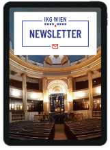
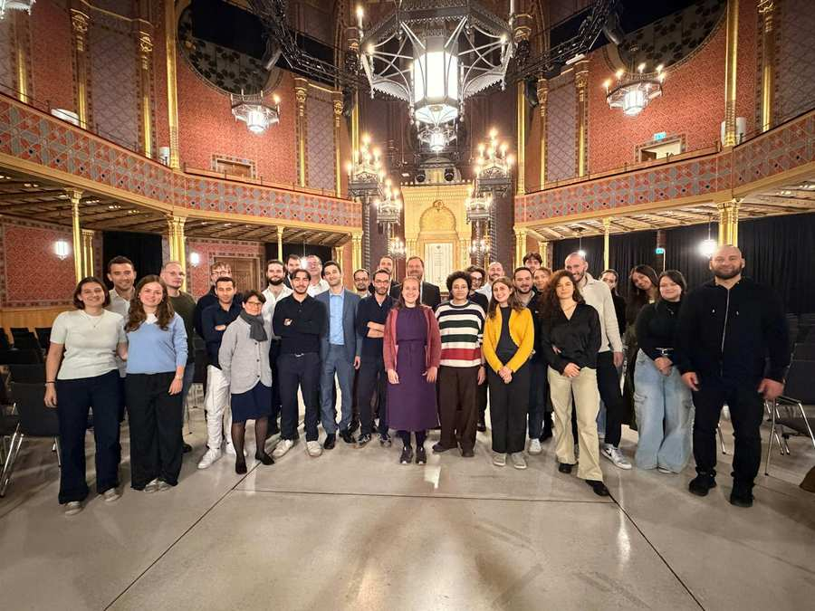
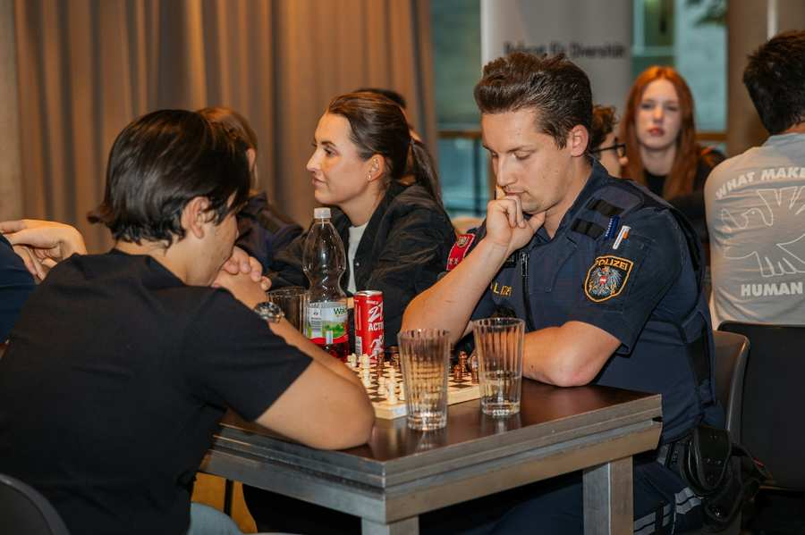
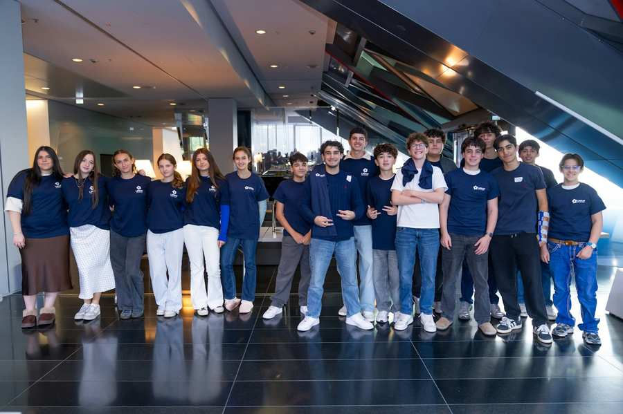
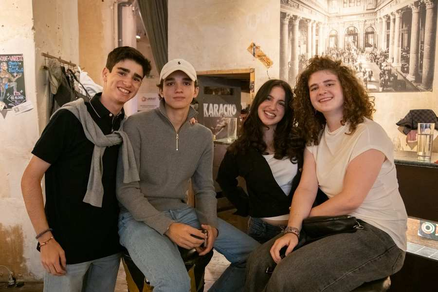
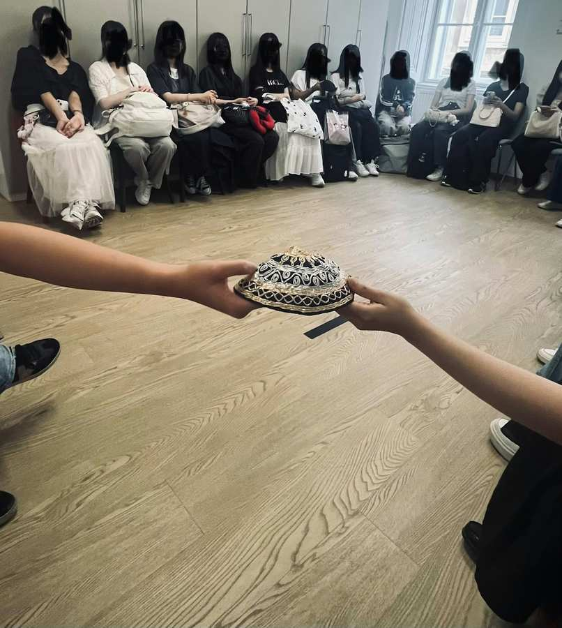
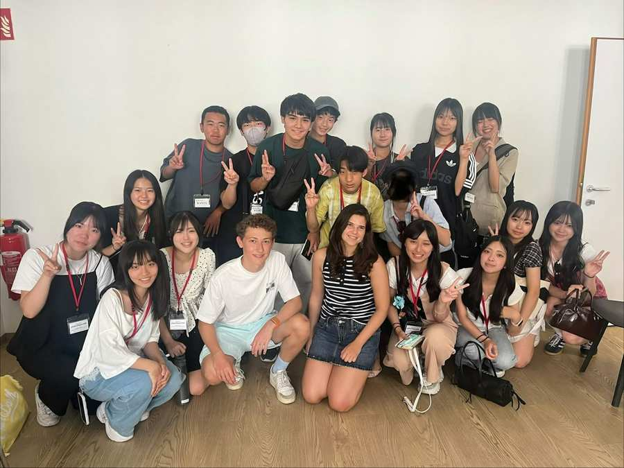
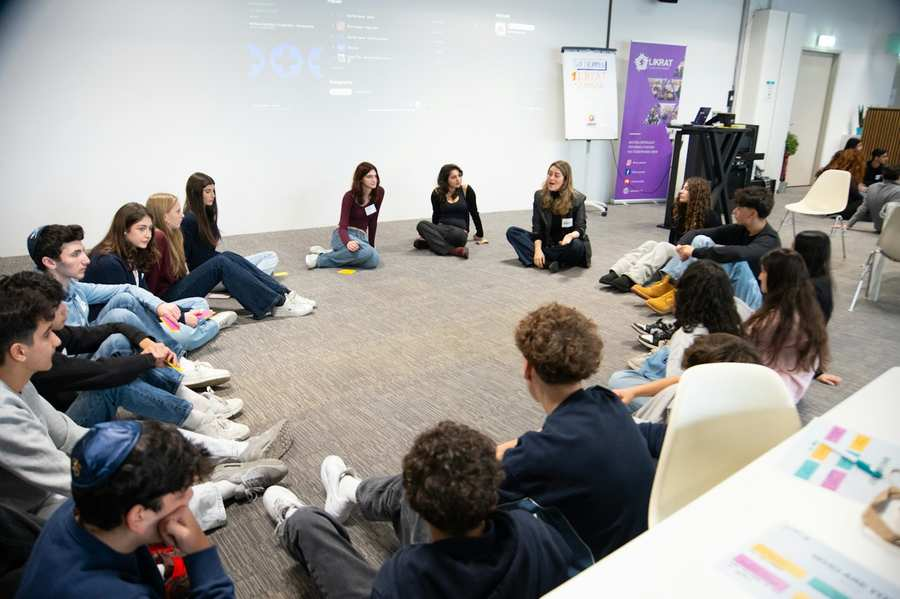
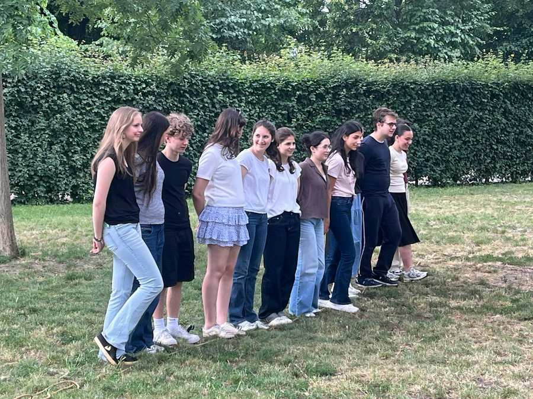
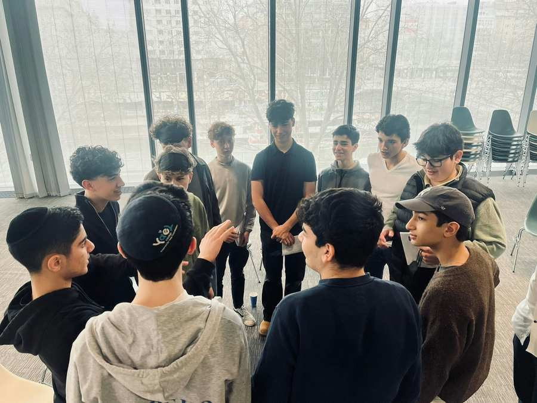

דף הבית / נוכחי הקטגוריה כל הקטגוריות תמונה: IKG Wien נוער תמונה: IKG Wien תרבות תמונה: IKG Wien חדשות תמונה: IKG Wien הרבנות תמונה: IKG Wien הזמינו את הניוזלטר IKG תמונה: IKG Wien תמיד מעודכן לגבי ה-IKG והחיים היהודיים בוינה ניוזלטר תמונה: IKG Wien נוער, ליקרת (Likrat), פוקוס ליקראטינוס וליקרטינס בסמינר המנהיגות הבינלאומי "הצעד הראשון 2026" בבודפשט יותר תמונה: IKG Wien נוער, ליקרת (Likrat), פוקוס כאשר משחק הופך למפגש: ליקרת (Likrat) ב"משטרה משחקת יחד" יותר תמונה: IKG Wien נוער, ליקרת (Likrat), פוקוס ליקרת (Likrat) 2027: בציר חדש, משימה משותפת 19.10.2026 יותר תמונה: IKG Wien נוער, ליקרת (Likrat), פוקוס יותר מ-160 מפגשים: ליקרת (Likrat) אומר תודה 22.09.2026 יותר תמונה: IKG Wien נוער, ליקרת (Likrat) מיפן לוינה - המפגש השני עם ליקרת (Likrat) הקיץ 28.08.2026 יותר תמונה: IKG Wien נוער, ליקרת (Likrat), פוקוס Konnichiwa LIKRAT! – מפגש עם סטודנטים מטוקיו 07.08.2026 יותר תמונה: IKG Wien חדשות, נוער, ליקרת (Likrat), פוקוס קורס ליקרת (Likrat) חדש 2027 13.07.2026 יותר תמונה: IKG Wien נוער, ליקרת (Likrat), פוקוס LIKRAT 2026: סיום מלא בכיף, הרהור וקהילה 08.06.2026 יותר תמונה: IKG Wien חדשות, נוער, ליקרת (Likrat), פוקוס 5. סמינר ליקרת (Likrat): תקשורת ורטוריקה 16.03.2026 יותר יותר